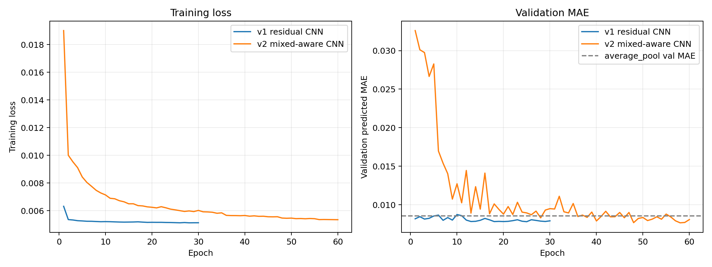

Samples
362,264 paired 3D patches from 100 randomized interface cases.
Seed dataset
A draft AI-ready benchmark dataset for VOF super-resolution and closure modeling, generated from randomized analytic interfaces initialized in NGA2.
362,264 paired 3D patches from 100 randomized interface cases.
High-resolution 16x16x16 patches paired with low-resolution 4x4x4 fields.
Case-level split: cases 1-80 train, 81-90 validation, 91-100 test.
Draft seed record. DOI, public archive URL, license, and citation still need final values.

Data structure
High-resolution VOF patch with shape [362264, 1, 16, 16, 16], stored as float16.
Low-resolution VOF patch with shape [362264, 1, 4, 4, 4], stored as float16.
4x4x4 volume average of the high-resolution field over each coarse cell.
Defined as y_lr - baseline_avgpool4 for closure-model experiments.
Minimal loader
import numpy as np
data = np.load("random_interfaces_n256_to_n64_interface_patches_v2.npz")
x_hr = data["x_hr"]
y_lr = data["y_lr"]
print(x_hr.shape, y_lr.shape)Before public release